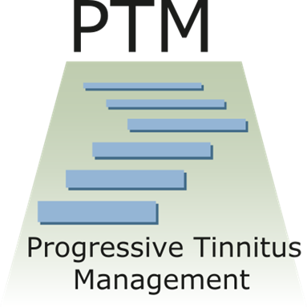

Some people with tinnitus feel like they can’t enjoy life again unless the tinnitus is quieter or gone. Because of this, they may stop doing many of their usual activities, especially activities they enjoy.
If you are doing fewer activities because of tinnitus, then you are more likely to be focused on your tinnitus, and you are more likely to feel unhappy.
One way to start feeling better is to plan pleasant activities even when your tinnitus is bothering you. Pleasant activities can help you enjoy life and pay less attention to your tinnitus.
At first, you might feel like you are “relearning” how to enjoy pleasant activities. The activities might be harder to enjoy than they were without tinnitus. With time, you can learn to enjoy the activities even with tinnitus.
One way to increase pleasant activities is to plan ahead. This may sound simple, but most of the time we wait until we feel better to do something we enjoy.
If you let how you feel guide what you do, then you may end up staying home and not doing anything. If you schedule pleasant activities you will find it easier to do something you enjoy. As a result, you may feel more pleasure!
Plan at least one pleasant activity each day. The Tinnitus Coach has a list of activities you can look at for ideas. It can also help you schedule pleasant activities
When thinking about which activities are the best fit for you, think about what you value in life. Values are like directions on a compass--they point you where you wish to go. Values can be things like caring for others, service, adventure, scholarship, leadership, faith, family, love, discipline, focus, or fitness.
If you pick pleasant activities that fit with your values, the activities can add meaning to your life. The Tinnitus Coach guides you to choose activities based on your values.
This is detail view for Item 4
Medications used for tinnitus were developed for other problems like depression, anxiety, and trouble sleeping. Some of these medications can improve your mood. A better mood can help to make tinnitus less of a problem. In rare cases medications may make tinnitus quieter. However, medications can also make tinnitus louder. Because of possible side effects, the use caution with medications.

< Sometimes it’s hard to fit everything you want to do into your schedule. Unless you plan the activity by scheduling it, you may continue with your routine as it is. Plan at least one pleasant activity per day. Use a calendar or scheduler to record your plans for pleasant activities. Write down how long you will do the activity and when you will do it.
Once per week ask yourself the following questions:
-
Did I do all of my scheduled pleasant activities each day?
-
Why didn’t I do some or all of my activities as planned?
-
Did I notice my tinnitus less when I did these activities?
-
Would more activities help me get my mind off of my tinnitus?
-
Do I need to have more or fewer pleasant activities?
Use this information to evaluate which activities are best for you. Identify which ones reduce your awareness of tinnitus and which ones lead to the most enjoyment. Then keep going!
Many people have hearing problems along with tinnitus. Some people think hat the tinnitus causes their hearing problems which is not true.
Hearing problems are caused by hearing loss or problems processing sound. If you have tinnitus or hearing problems, you should have a hearing test.
This is detail view for Item 9
This is detail view for Item 10

PTM is designed to help people with different levels of need. Some people with tinnitus only need a hearing test and answers to their questions. For people who need more help PTM teaches ways to use sound to manage reactions to tinnitus.
PTM also teaches how to change thoughts and feelings to cope with tinnitus. Audiologists and mental health providers teach these skills.